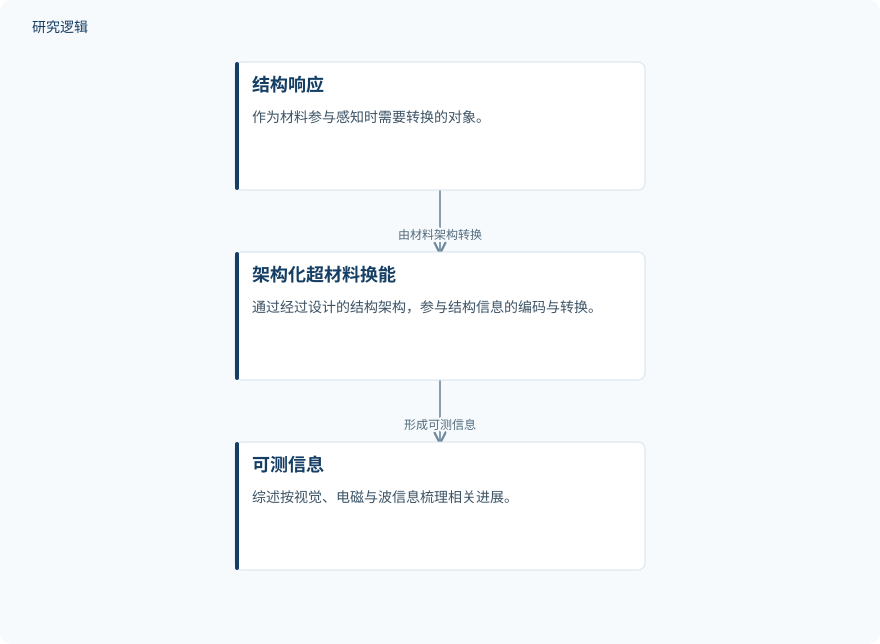

摘要解读
作为结构健康监测换能器的超材料：批判性综述与展望
Metamaterials as transducers for structural health monitoring: a critical review and perspective
解读更新 2026-11-10 17:41 · 依据公开摘要整理，未核验全文细节
结构健康监测能否不只依赖外加传感器，而让材料自身参与信息转换？这篇综述关注超材料如何通过人工设计的结构架构，将结构响应转化为可测信息，为理解监测系统中材料与电子设备的分工提供了阅读入口。
文章目录
从外加传感器转向材料参与感知
传统结构健康监测依赖分布式传感器、数据采集、信号传输与外部数据处理。摘要指出，这种以传感器为中心的范式能够可靠地检测损伤，但仍受到系统复杂度、布线、功耗、维护及可扩展性的限制。
超材料提供的替代思路，是利用经过设计的结构架构，让材料本身参与感知。这里的关键不只是材料承受了什么载荷，而是结构响应如何被转换为能够读取的信息。
按信息的物理域梳理超材料换能
本文是一篇综述，摘要明确的组织方法是：围绕架构化超材料如何编码、转换和传递结构信息，将相关进展按生成信息所属的物理域分类。它并非在摘要中报告某一种新传感器的制备流程或性能测试。
综述还讨论逆向设计、拓扑优化、增材制造、机器学习与数字孪生等使能技术，关注它们在开发兼具感知、滤波、放大和信息传递功能的多功能超材料中的作用。
依据摘要整理的材料换能关系示意


仅概括摘要明确描述的结构响应经材料架构转换为可测信息的关系，不代表论文原图或具体实验配置。
下载 SVG图示关系说明
实线表示相邻阶段的信息流，虚线表示跨阶段联系或反馈。
结构响应 → 架构化超材料换能：由材料架构转换；架构化超材料换能 → 可测信息：形成可测信息
视觉、电磁与波信息构成主要分类
摘要归纳的视觉信息包括形状变换、结构色、力致变色和力致发光；电磁信息包括电学、电容、压电、摩擦电、射频、超表面及无源无线响应。这些分类展示了结构信息可以被转换和表达的不同物理形式，而非同一种读出机制。
波信息则涵盖弹性波传播、带隙、共振偏移、模式转换、局域化和机械滤波。综述进一步提出材料中心型监测的未来图景：材料不再只是被动结构部件，而是在信息到达常规电子系统之前参与物理处理与传递。这一图景属于展望，不能等同于已完成的系统验证。
分类框架不等于性能优劣结论
仅凭摘要，无法判断综述纳入研究的数量、样本与结构类型、文献筛选范围，也无法核对不同换能机制是否采用一致的比较条件。摘要未提供检测精度、耐久性、功耗或工程验证范围，因此不能据此给各类方案排序，也不能断言材料中心型监测已经解决传统系统的限制。
阅读启发：追问信息在哪里被处理
阅读启发：对智能运维与结构设计读者，可沿着“结构响应如何变成信息”继续阅读，重点关注材料承担了哪些转换或滤波功能、电子系统还需完成哪些处理。对于摘要提到的机器学习、数字孪生和逆向设计，值得进一步核对其具体角色及验证依据，而不宜直接推断其已提升诊断效果或结构可靠性。
以上为本站阅读启发与建议，不是论文已验证的结论。